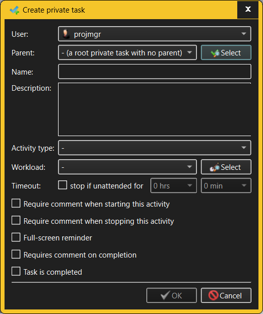

Create/Modify Private Task dialog
The same dialog is used for both creating new Private Tasks and modifying existing
Private Tasks.

The fields in the Create/Modify Private Task dialog allow the user to specify:
- User - a Private Task always belongs to some User.
The owner of a Private Task can be chosen when creating a Private
Task, but TimeTracker3 does not currently allow re-assigning an existing
Private Task to another User.
- Parent task - Private Tasks are organized into a
hierarchy where a Private Task can have sub-tasks which, in turn, can have
further sub-tasks, and so on. The parent for a Private Task is first chosen
when that Private Task is created but can be changed later.
- Name - Private Tasks are identified by short,
descriptive names (such as "Create German translation of the UI", "Prepare
the project vision document" and so on) which must
be unique for a given User (if the Private Task is a root Private Task
that does not have a parent) or parent (if the Private Task has a parent).
- Description - if the Private Task name is not
self-explanatory, its description may help to clarify its meaning. Multiple
lines of text may be entered here.
- Activity type - use this drop-down list to select the
Activity Type to assign the Private Task to.
- Workload - use this drop-down list and its associated
selection button to assign a Private Task to a specific Project or Work
Stream. Such assignments help in tracking effort dedicated to individual
Projects over a period of time.
- Timeout - these fields govern what happens if the user
starts recording the Private Task but then
leaves the computer unattended. If this is to happen, TimeTracker3 may
automatically finish the Private Task in question, logging a comment to that
effect. NOTE that this behavior overrides any "inactivity timeout"
configured for the User as far as the Private Task in question is
concerned.
- Require comment when starting/stopping this activity -
these two check boxes specify what happens when the Private Task is
started and stopped. If any of the two are checked, then TimeTracker3 will
present a popup dialog requesting the user to enter a comment, which is then
recorded into the workspace as an Event. If the Activity that is being
recorded requires comment when stopped, and the switch is made to recording
a Private Task which requires a comment when started, the user is asked to
enter the comment only once; such comment is then associated with both old
and new recorded Activity.
- Full-screen reminder - if checked, then starting such a
Private Task will pop up a full-screen reminder window stating that the
Private Task is underway (and how long it is being recorded for); this
popup window will be hidden when the recording of the Private Task is
stopped. This is beneficial for Private Tasks which expect the user to
leave their workplace (such as "meeting with the lawyer", etc.) - having a
full-screen reminder helps the user to explicitly stop recording the Private
Task, logging an "away from keyboard" Work item and switching to the
next Activity to work on.
- Require comment on completion - if checked, the user
will be required to enter a comment when marking the Private Task as
"completed".
- Completed - use this check box to mark the Private Task
as "completed". It can also be used to "un-complete" a Private Task, but this
action requires an Administrator capability, as it breaks the normal
workflow of Private Tasks.
Only someone with Administrator or Manage Private Tasks capabilities is
allowed to create or modify Private Tasks. However, anyone who can log into a
given workspace can see all of their own Private Tasks. The exception to
this rule is the case when a specific User is configured to only allow working
on specific Private Tasks, in which case only these Private Tasks will
be visible in the tree and all other existing Private Tasks will not be
visible. NOTE also that an Administrator will be able to see and manage Private
Tasks of any User.
See also: -